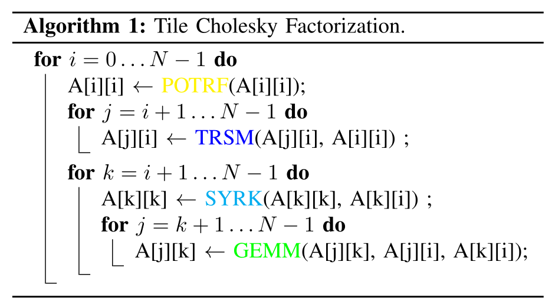
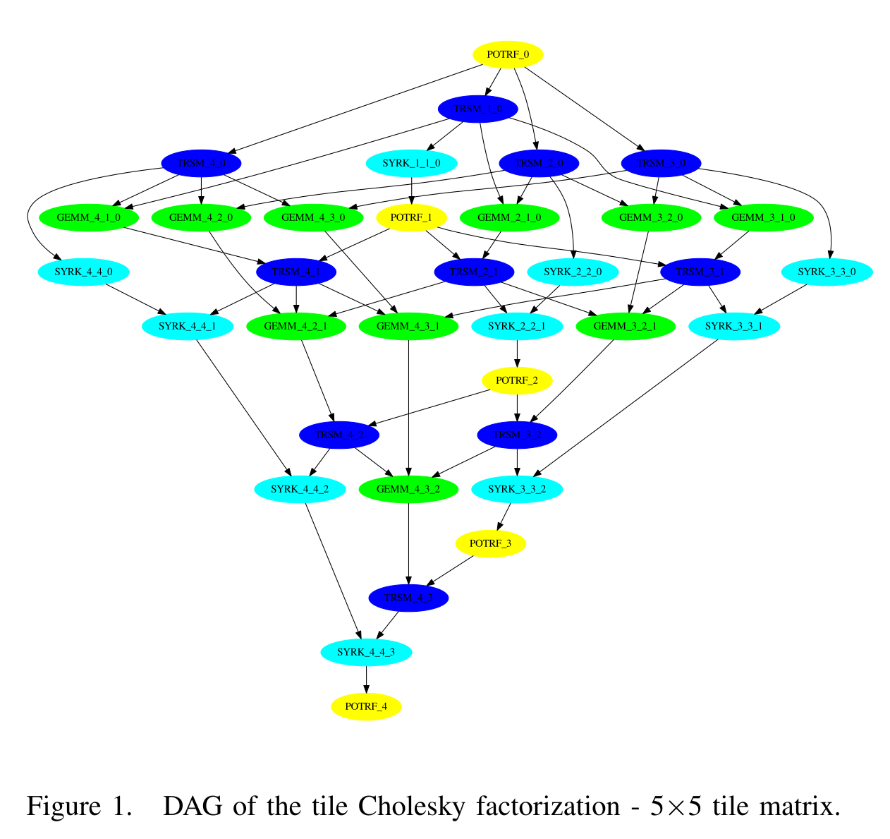

def render_c(filename):
from IPython.display import Markdown
with open(filename) as f:
contents = f.read()
return Markdown("```c\n" + contents + "```\n")
Using #pragma omp task
Up to now, we’ve been expressing parallelism for iterating over an array.
render_c('task_dep.4.c')
#include <stdio.h>
int main() {
int x = 1;
#pragma omp parallel
#pragma omp single
{
#pragma omp task shared(x) depend(out: x)
x = 2;
#pragma omp task shared(x) depend(in: x)
printf("x + 1 = %d. ", x+1);
#pragma omp task shared(x) depend(in: x)
printf("x + 2 = %d. ", x+2);
}
puts("");
return 0;
}
!make CFLAGS=-fopenmp -B task_dep.4
cc -fopenmp task_dep.4.c -o task_dep.4
!for i in {1..10}; do ./task_dep.4; done
x + 2 = 4. x + 1 = 3.
x + 1 = 3. x + 2 = 4.
x + 2 = 4. x + 1 = 3.
x + 1 = 3. x + 2 = 4.
x + 2 = 4. x + 1 = 3.
x + 1 = 3. x + 2 = 4.
x + 1 = 3. x + 2 = 4.
x + 2 = 4. x + 1 = 3.
x + 2 = 4. x + 1 = 3.
x + 2 = 4. x + 1 = 3.
render_c('task_dep.4inout.c')
#include <stdio.h>
int main() {
int x = 1;
#pragma omp parallel
#pragma omp single
{
#pragma omp task shared(x) depend(out: x)
x = 2;
#pragma omp task shared(x) depend(inout: x)
printf("x + 1 = %d. ", x+1);
#pragma omp task shared(x) depend(in: x)
printf("x + 2 = %d. ", x+2);
}
puts("");
return 0;
}
!make CFLAGS=-fopenmp -B task_dep.4inout
cc -fopenmp task_dep.4inout.c -o task_dep.4inout
!for i in {1..10}; do ./task_dep.4inout; done
x + 1 = 3. x + 2 = 4.
x + 1 = 3. x + 2 = 4.
x + 1 = 3. x + 2 = 4.
x + 1 = 3. x + 2 = 4.
x + 1 = 3. x + 2 = 4.
x + 1 = 3. x + 2 = 4.
x + 1 = 3. x + 2 = 4.
x + 1 = 3. x + 2 = 4.
x + 1 = 3. x + 2 = 4.
x + 1 = 3. x + 2 = 4.
Computing the Fibonacci numbers with OpenMP
Fibonacci numbers are defined by the recurrence
\begin{align}
F_0 &= 0
F_1 &= 1
Fn &= F{n-1} + F_{n-2}
\end{align}
render_c('fib.c')
#include <stdio.h>
#include <stdlib.h>
long fib(long n) {
if (n < 2) return n;
return fib(n - 1) + fib(n - 2);
}
int main(int argc, char **argv) {
if (argc != 2) {
fprintf(stderr, "Usage: %s N\n", argv[0]);
return 1;
}
long N = atol(argv[1]);
long fibs[N];
#pragma omp parallel for
for (long i=0; i<N; i++)
fibs[i] = fib(i+1);
for (long i=0; i<N; i++)
printf("%2ld: %5ld\n", i+1, fibs[i]);
return 0;
}
!make CFLAGS='-O2 -march=native -fopenmp -Wall' -B fib
cc -O2 -march=native -fopenmp -Wall fib.c -o fib
!OMP_NUM_THREADS=4 time ./fib 40
1: 1
2: 1
3: 2
4: 3
5: 5
6: 8
7: 13
8: 21
9: 34
10: 55
11: 89
12: 144
13: 233
14: 377
15: 610
16: 987
17: 1597
18: 2584
19: 4181
20: 6765
21: 10946
22: 17711
23: 28657
24: 46368
25: 75025
26: 121393
27: 196418
28: 317811
29: 514229
30: 832040
31: 1346269
32: 2178309
33: 3524578
34: 5702887
35: 9227465
36: 14930352
37: 24157817
38: 39088169
39: 63245986
40: 102334155
0.85user 0.00system 0:00.78elapsed 109%CPU (0avgtext+0avgdata 2044maxresident)k
0inputs+0outputs (0major+99minor)pagefaults 0swaps
Use tasks
render_c('fib2.c')
#include <stdio.h>
#include <stdlib.h>
long fib(long n) {
if (n < 2) return n;
long n1, n2;
#pragma omp task shared(n1)
n1 = fib(n - 1);
#pragma omp task shared(n2)
n2 = fib(n - 2);
#pragma omp taskwait
return n1 + n2;
}
int main(int argc, char **argv) {
if (argc != 2) {
fprintf(stderr, "Usage: %s N\n", argv[0]);
return 1;
}
long N = atol(argv[1]);
long fibs[N];
#pragma omp parallel
#pragma omp single nowait
{
for (long i=0; i<N; i++)
fibs[i] = fib(i+1);
}
for (long i=0; i<N; i++)
printf("%2ld: %5ld\n", i+1, fibs[i]);
return 0;
}
!make CFLAGS='-O2 -march=native -fopenmp -Wall' fib2
make: 'fib2' is up to date.
!OMP_NUM_THREADS=2 time ./fib2 30
1: 1
2: 1
3: 2
4: 3
5: 5
6: 8
7: 13
8: 21
9: 34
10: 55
11: 89
12: 144
13: 233
14: 377
15: 610
16: 987
17: 1597
18: 2584
19: 4181
20: 6765
21: 10946
22: 17711
23: 28657
24: 46368
25: 75025
26: 121393
27: 196418
28: 317811
29: 514229
30: 832040
2.42user 0.81system 0:02.54elapsed 127%CPU (0avgtext+0avgdata 2028maxresident)k
0inputs+0outputs (0major+100minor)pagefaults 0swaps
It’s expensive to create tasks when
nis small, even with only one thread. How can we cut down on that overhead?render_c('fib3.c')#include <stdio.h> #include <stdlib.h> long fib(long n) { if (n < 2) return n; if (n < 30) return fib(n - 1) + fib(n - 2); long n1, n2; #pragma omp task shared(n1) n1 = fib(n - 1); #pragma omp task shared(n2) n2 = fib(n - 2); #pragma omp taskwait return n1 + n2; } int main(int argc, char **argv) { if (argc != 2) { fprintf(stderr, "Usage: %s N\n", argv[0]); return 1; } long N = atol(argv[1]); long fibs[N]; #pragma omp parallel #pragma omp single nowait { for (long i=0; i<N; i++) fibs[i] = fib(i+1); } for (long i=0; i<N; i++) printf("%2ld: %5ld\n", i+1, fibs[i]); return 0; }!make CFLAGS='-O2 -march=native -fopenmp -Wall' fib3cc -O2 -march=native -fopenmp -Wall fib3.c -o fib3
!OMP_NUM_THREADS=3 time ./fib3 401: 1 2: 1 3: 2 4: 3 5: 5 6: 8 7: 13 8: 21 9: 34 10: 55 11: 89 12: 144 13: 233 14: 377 15: 610 16: 987 17: 1597 18: 2584 19: 4181 20: 6765 21: 10946 22: 17711 23: 28657 24: 46368 25: 75025 26: 121393 27: 196418 28: 317811 29: 514229 30: 832040 31: 1346269 32: 2178309 33: 3524578 34: 5702887 35: 9227465 36: 14930352 37: 24157817 38: 39088169 39: 63245986 40: 102334155 3.56user 0.00system 0:01.27elapsed 280%CPU (0avgtext+0avgdata 1920maxresident)k 0inputs+0outputs (0major+103minor)pagefaults 0swaps
This is just slower, even with one thread. Why might that be?
render_c('fib4.c')#include <stdio.h> #include <stdlib.h> long fib_seq(long n) { if (n < 2) return n; return fib_seq(n - 1) + fib_seq(n - 2); } long fib(long n) { if (n < 30) return fib_seq(n); long n1, n2; #pragma omp task shared(n1) n1 = fib(n - 1); #pragma omp task shared(n2) n2 = fib(n - 2); #pragma omp taskwait return n1 + n2; } int main(int argc, char **argv) { if (argc != 2) { fprintf(stderr, "Usage: %s N\n", argv[0]); return 1; } long N = atol(argv[1]); long fibs[N]; #pragma omp parallel #pragma omp single nowait { for (long i=0; i<N; i++) fibs[i] = fib(i+1); } for (long i=0; i<N; i++) printf("%2ld: %5ld\n", i+1, fibs[i]); return 0; }!make CFLAGS='-O2 -march=native -fopenmp -Wall' fib4make: ‘fib4’ is up to date.
!OMP_NUM_THREADS=2 time ./fib4 401: 1 2: 1 3: 2 4: 3 5: 5 6: 8 7: 13 8: 21 9: 34 10: 55 11: 89 12: 144 13: 233 14: 377 15: 610 16: 987 17: 1597 18: 2584 19: 4181 20: 6765 21: 10946 22: 17711 23: 28657 24: 46368 25: 75025 26: 121393 27: 196418 28: 317811 29: 514229 30: 832040 31: 1346269 32: 2178309 33: 3524578 34: 5702887 35: 9227465 36: 14930352 37: 24157817 38: 39088169 39: 63245986 40: 102334155 0.94user 0.00system 0:00.53elapsed 177%CPU (0avgtext+0avgdata 2040maxresident)k 8inputs+0outputs (0major+97minor)pagefaults 0swaps
Alt: schedule(static,1)
render_c('fib5.c')
#include <stdio.h>
#include <stdlib.h>
long fib(long n) {
if (n < 2) return n;
return fib(n - 1) + fib(n - 2);
}
int main(int argc, char **argv) {
if (argc != 2) {
fprintf(stderr, "Usage: %s N\n", argv[0]);
return 1;
}
long N = atol(argv[1]);
long fibs[N];
#pragma omp parallel for schedule(static,1)
for (long i=0; i<N; i++)
fibs[i] = fib(i+1);
for (long i=0; i<N; i++)
printf("%2ld: %5ld\n", i+1, fibs[i]);
return 0;
}
!make CFLAGS='-O2 -march=native -fopenmp -Wall' fib5
make: 'fib5' is up to date.
!OMP_NUM_THREADS=2 time ./fib5 40
1: 1
2: 1
3: 2
4: 3
5: 5
6: 8
7: 13
8: 21
9: 34
10: 55
11: 89
12: 144
13: 233
14: 377
15: 610
16: 987
17: 1597
18: 2584
19: 4181
20: 6765
21: 10946
22: 17711
23: 28657
24: 46368
25: 75025
26: 121393
27: 196418
28: 317811
29: 514229
30: 832040
31: 1346269
32: 2178309
33: 3524578
34: 5702887
35: 9227465
36: 14930352
37: 24157817
38: 39088169
39: 63245986
40: 102334155
0.88user 0.00system 0:00.54elapsed 161%CPU (0avgtext+0avgdata 1908maxresident)k
8inputs+0outputs (0major+93minor)pagefaults 0swaps
Better math
render_c('fib6.c')
#include <stdio.h>
#include <stdlib.h>
int main(int argc, char **argv) {
if (argc != 2) {
fprintf(stderr, "Usage: %s N\n", argv[0]);
return 1;
}
long N = atol(argv[1]);
long fibs[N];
fibs[0] = 1;
fibs[1] = 2;
for (long i=2; i<N; i++)
fibs[i] = fibs[i-1] + fibs[i-2];
for (long i=0; i<N; i++)
printf("%2ld: %5ld\n", i+1, fibs[i]);
return 0;
}
!make CFLAGS='-O2 -march=native -fopenmp -Wall' fib6
cc -O2 -march=native -fopenmp -Wall fib6.c -o fib6
!time ./fib6 100
1: 1
2: 2
3: 3
4: 5
5: 8
6: 13
7: 21
8: 34
9: 55
10: 89
11: 144
12: 233
13: 377
14: 610
15: 987
16: 1597
17: 2584
18: 4181
19: 6765
20: 10946
21: 17711
22: 28657
23: 46368
24: 75025
25: 121393
26: 196418
27: 317811
28: 514229
29: 832040
30: 1346269
31: 2178309
32: 3524578
33: 5702887
34: 9227465
35: 14930352
36: 24157817
37: 39088169
38: 63245986
39: 102334155
40: 165580141
41: 267914296
42: 433494437
43: 701408733
44: 1134903170
45: 1836311903
46: 2971215073
47: 4807526976
48: 7778742049
49: 12586269025
50: 20365011074
51: 32951280099
52: 53316291173
53: 86267571272
54: 139583862445
55: 225851433717
56: 365435296162
57: 591286729879
58: 956722026041
59: 1548008755920
60: 2504730781961
61: 4052739537881
62: 6557470319842
63: 10610209857723
64: 17167680177565
65: 27777890035288
66: 44945570212853
67: 72723460248141
68: 117669030460994
69: 190392490709135
70: 308061521170129
71: 498454011879264
72: 806515533049393
73: 1304969544928657
74: 2111485077978050
75: 3416454622906707
76: 5527939700884757
77: 8944394323791464
78: 14472334024676221
79: 23416728348467685
80: 37889062373143906
81: 61305790721611591
82: 99194853094755497
83: 160500643816367088
84: 259695496911122585
85: 420196140727489673
86: 679891637638612258
87: 1100087778366101931
88: 1779979416004714189
89: 2880067194370816120
90: 4660046610375530309
91: 7540113804746346429
92: -6246583658587674878
93: 1293530146158671551
94: -4953053512429003327
95: -3659523366270331776
96: -8612576878699335103
97: 6174643828739884737
98: -2437933049959450366
99: 3736710778780434371
100: 1298777728820984005
0.002 real 0.002 user 0.000 sys 99.42 cpu
To fork/join or to task?
When the work unit size and compute speed is predictable, we can partition work in advance and schedule with omp for to achieve load balance.
Satisfying both criteria is often hard:
- Adaptive algorithms, adaptive physics, implicit constitutive models
- AVX throttling, thermal throttling, network or file system contention, OS jitter
Fork/join and barriers are also high overhead, so we might want to express data dependencies more precisely.

For tasking to be efficient, it relies on overdecomposition, creating more work units than there are processing units. For many numerical algorithms, there is some overhead to overdecomposition. For example, in array processing, a halo/fringe/ghost/overlap region might need to be computed as part of each work patch, leading to time models along the lines of $$ t{\text{tile}}(n) = t{\text{latency}} + \frac{(n+2)^3}{R} $$ where $R$ is the processing rate. In addition to the latency, the overhead fraction is $$ \frac{(n+2)^3 - n^3}{n^3} \approx 6/n $$ indicating that larger $n$ should be more efficient.
However, if this overhead is acceptable and you still have load balancing challenges, tasking can be a solution. (Example from a recent blog/talk.)

Computational depth and the critical path
Consider the block Cholesky factorization algorithm (applying to the lower-triangular matrix $A$).

Expressing essential data dependencies, this results in the following directed acyclic graph (DAG). No parallel algorithm can complete in less time than it takes for a sequential algorithm to perform each operation along the critical path (i.e., the minimum depth of this graph such that all arrows point downward).

Figures from Agullo et al (2016): Are Static Schedules so Bad? A Case Study on Cholesky Factorization, which is an interesting counterpoint to the common narrative pushing dynamic scheduling.
Question: what is the computational depth of summing an array?
$$ \sum_{i=0}^{N-1} a_i $$
double sum = 0;
for (int i=0; i<N; i++)
sum += array[i];
Given an arbitrarily large number $P$ of processing units, what is the smallest computational depth to compute this mathematical result? (You’re free to use any associativity.)